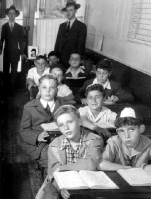
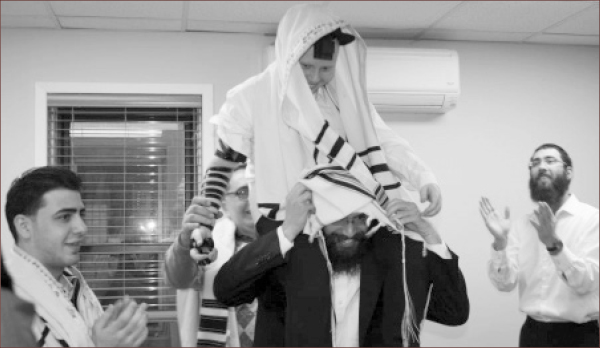

The Angels Are Jealous
Under the Released Time program in New York, about two hundred bachurim go out each week and take Jewish children who attend public schools out of class for a fun-filled Jewish program. * This makes a huge difference in the lives of thousands of Jewish children, some of whom become shomrei Torah and mitzvos. * R’ Yaron Tzvi, one of the counselors, tells about the organization that was founded over seventy years ago.

Last Sukkos, a friend invited me to join him. When I asked him to describe what happens, I heard about Released Time for the first time. He said, “Once a week, we go to public schools throughout New York and take interested Jewish children out of class. We provide them with an hour of Jewish instruction. This program was started in 1941 by the Rebbe Rayatz.”
I was curious and decided to join. Since then, for half a year, I am proud to be a member in this organization and take part in this incredible educational endeavor where you truly feel that you are saving Jewish lives. Today I’m already a director of a district and in this capacity that deals directly with providing a proper education for the children I see the impact that every weekly encounter has on the children. I can only imagine the long-term effects of this program on their lives.
THE PROGRAM THAT ANGELS ARE JEALOUS OF
The Rebbe Rayatz started this program under the aegis of Merkos L’Inyanei Chinuch. A law was passed by Congress that allowed for every child in the public school system to be offered an hour of religious instruction. The Rebbe Rayatz grabbed this opportunity and started the Shiurei Limudei Ha’daas (Shelah) organization which runs the Released Time program.
In the first phase, R’ MM Feldman was appointed to run it. He started the organization and led it until 1945. Then R’ Yaakov Yehuda (JJ) Hecht took over and led it for about fifty years, until his passing.
Today, the Shelah offices are located in the Hadar Ha’Torah building in Crown Heights. R’ Hecht’s son, R’ Sholom Dovber currently has overall responsibility for the program and the hands-on director is R’ Shneur Zalman Kalman Zirkind.
***
The two hundred or so bachurim counselors are divided into teams and they disperse to about eighty public schools in the New York metropolitan area. Jewish children who are registered for the program (about 1000 today) are excused from their classrooms for an hour of Jewish studies in a nearby Chabad house or shul.
What do they learn? The material is usually connected with the parsha of the week or Jewish holidays. The children also learn brachos before eating, prayer, p’sukim, etc. The creative counselors combine the learning with games. At the end of every class there are raffles for prizes.
The counselors also keep in touch with the children’s families. On Chanuka they visit their students’ homes and over the year they meet with the parents now and then and strengthen their Jewish awareness.
This program gave the Rebbe Rayatz much nachas. At a farbrengen on 18 Elul 5704 he said, “In recent years, 3000 children joined Released Time where they [the counselors] spoke to them about belief in G-d, said brachos with them, etc. These children come from homes that are treif, without mezuzos, without Shabbos, and they say a bracha, a pasuk etc. This causes a commotion in heaven where all the angels convene …”

ONE ON ONE
There is no question that the program has an enormous impact on children even though it is only one hour a week. I have encountered American baalei t’shuva who have told me that their journey toward Judaism began with this program. Jewish parents who send their children to public school, for whatever reason, still want their children to get some Jewish learning and they register them for Released Time.
I have called families in order to convince them to register their children when the children have dropped out of the program, only to hear that the child no longer attends because he decided to switch to a yeshiva. In 5773, 114 children switched to yeshivos!
Moshe Rafaelov, 22 years old, said this program brought him to where he is today:
“The idea of my doing t’shuva and the motivation to follow through on this is based on my participation in the Released Time program when I was a kid. I grew up in a traditional Bucharian family. In our home we made kiddush and had a Shabbos meal and observed most holidays, but that’s all. I did not know much about Judaism and did not belong to a specific community. One time, the school advisor at the public school I attended in Kew Gardens Hills recommended to my parents that they send me to this program. The rest is history!”
When he was asked what impressed him most about the program he said, “Mainly the songs that they always sang there during the t’fillos, the games and the activities. Judaism went from a body of dry laws to something alive, dynamic and experiential!”
Abraham Michlin has a similar story:
“I come from a typical, irreligious American family in Brooklyn. One day, at the end of school, I saw my mother standing in the parking lot holding an ad which said something about Jewish studies every Wednesday at the end of the public school day. I thought, that’s a great idea for missing out on some classes. I told my mother I wanted to join the program. I was the only one in my district to register and I got classes one-on-one! A young man came just for me to teach me a little Judaism.
“Judaism became something alive and beautiful. When I grew older and my family moved to Pennsylvania, I became even more involved in Judaism through the shliach who taught me and prepared me for my bar mitzva. When I was young, my dream was to become a professional baseball player. Today, I myself am active in a program that helps Jewish children get to know their heritage. My dream now is to be a shliach of the Rebbe!”
In many places, the program expands to include bar mitzva lessons at a later stage, Mivtza Mezuza in the children’s homes, house calls, Mivtza Dalet Minim and giving out matza before Pesach, giving out doughnuts and lighting the menorah. Likewise, many register to learn Hebrew in Sunday school which takes place in one of the local Chabad houses every Sunday.
WHY IS MOSHE RABBEINU JEALOUS OF THE RELEASED TIME COUNSELORS?
During my weekly participation in the program, I heard bachurim quote the Rebbe as saying about Released Time that even Moshe Rabbeinu is jealous of someone who is involved in the program. In preparing this article I looked for the source for this. I spoke to R’ Aharon Cousin, shliach in London for 38 years, who ran the Lubavitch boys’ school among his many responsibilities. R’ Cousin told me that when he learned in 770 in the fifties he was a counselor for Released Time. There was another bachur with him, more of a lamdan by nature, who asked the Rebbe that he be excused from going.
“In those days there were three types of programs that bachurim went to for several hours: Mesibos Shabbos with children on Shabbos afternoon, reviewing Chassidus Shabbos afternoon in New York shuls, and Released Time on Wednesday afternoon. This bachur gave the Rebbe three reasons to be exempt from Released Time. 1) The school to which he was assigned took him a few hours to get there and back (a train to Coney Island, the program, and returning). He returned at six in the evening and missed a lot of learning. 2) He did not know what effect he was having on the children and what he was contributing. 3) Going out on Wednesday disturbed his peace all week.
“The bachur soon received an astonishing answer. The Rebbe referred to each of the three reasons the bachur wrote about. As for it taking away from his learning time, the Rebbe said, ‘I want you to know that all the souls in Gan Eden, even the soul of Moshe Rabbeinu a”h, envy you for being able to say a bracha or Shma Yisroel with a Jewish child and they cannot do so!’
“As far as not knowing what he was accomplishing with the children, the Rebbe wrote, ‘You can never know but there is a guarantee that efforts are not made in vain.’ As for the third reason that it disturbs the rest of his week, the Rebbe wrote, ‘that is a matter of temperament,’ and the Rebbe quoted the conversation in the Gemara between Abaya and Rava as an example that every person has a different temperament, a different level of concentration, different factors that perturb him.
“This answer from the Rebbe made me decide that I wanted to be involved in the chinuch of Jewish children for the rest of my life,” concluded R’ Cousin.
FROM THE CHURCH TO YESHIVA
R’ Yitzchok Bogomilsky, who is responsible for the transportation arrangements, told the following story which he heard from the protagonist firsthand:
A woman by the name of Nadia was walking on Wall Street when a bachur doing mivtzaim asked her if she was Jewish. He planned on giving her Shabbos candles if she was. Nadia was very taken aback by the question since just a few days earlier she had learned she was Jewish.
Nadia grew up in Paraguay in a Christian family that went to church every Sunday. The family had certain traditions that were different than those of other people. For example, they had two ovens and the grandmother would warn them not to eat meat, but if they had to, then to refrain from eating it with dairy. The grandmother also told them that even though they observed Sunday as a holy day, they should take into consideration the fact that it was bad luck to start a project on Saturday. These traditions seemed odd but it was explained that these traditions were in the family for generations.
A week before Nadia encountered the bachur, the grandmother decided to tell them the truth since she was afraid her days were numbered. She came to New York, gathered her family, and told them that they were a Jewish family, descendants of Jews who were persecuted in Poland. She said that after her father was murdered on the street by Nazis, she decided to conceal her Jewish identity even from her children and grandchildren, and protect them from anti-Semitism.
The family was dumbfounded by this revelation but it had not yet caused them to make any changes in their lives. Nadia, one of the grandchildren, did not consider changing any part of her lifestyle, but she felt less resistant when she saw the mitzva tank that Friday and was asked whether she was Jewish. She had so recently discovered that she was!
The truth is she would go every Friday to this area in order to see the tank in action. She said that she always noticed the warmth that the rabbis radiated but now, for the first time, she was given Shabbos candles and heard some stories about Judaism that sounded familiar to her.
Nadia did not get much further involved in Judaism. For a while she only took Shabbos candles on Friday and listened to Jewish stories. At a certain point she asked the tank rabbis what she could do for her children, in terms of their Jewish upbringing. They told her there is a special program in New York and if her children were in public school they could attend a weekly lesson in Judaism. Nadia liked the idea and for two years her children attended Released Time every Wednesday. The program with t’fillos, songs and more, had an effect on her household and the kitchen ended up becoming kosher and the children transferred to Jewish schools, thus fulfilling the Jewish grandmother’s final request.
A SHLIACH FROM HEAVEN ON A SNOWY DAY
Yirmiyahu M, who is active in the program, goes every week to convince parents to register their children for Released Time. In order to do this he walks around outside the school building (because it is illegal for him to discuss religion with parents inside the school) and looks for Jewish parents. Now and then he finds parents who are interested in registering their child and he makes sure they fill out the form and send it to him or hand it to him. The form is then given to the Released Time offices in Crown Heights.
Another way of recruiting children to the program is by making evening calls to families whose children were once in the program and then stopped, or new families that they heard about one way or another.
“One Wednesday afternoon there was a snowstorm. I wondered whether it was worth heading out to recruit more children that day when I assumed it would be hard to find parents standing outside. In the end, I decided that since this is the Rebbe’s shlichus, I had to try.”
Yirmiyahu set out and walked around outside the school where the parents waited in their cars for the children coming out of school. “I went from car to car and knocked on the windows. When someone opened, I asked, ‘Are you Jewish?’
“I knocked on a window of a car where two women were sitting. After the window opened, I asked, ‘Are you Jewish?’ The answer was yes. I began explaining the Released Time program. The woman sitting behind the wheel seemed very interested in the details and she looked at me and said, ‘You are a messenger from heaven.’
“I’ve heard many reactions, some of them not so nice, but I had never heard anything like this before. Since I was on the far side (on the pavement) and the snow was starting to enter the car through the open window, I decided to cross to the other side of the car to be closer to the woman. The woman said she was interested in registering her son and wanted to come with him the following Wednesday in order to see how the program worked.
“The next week she came with her son and was very pleased by what she saw. She went over to the counselor, Shneur B and told him how the previous Wednesday she had been sitting in her car in the snow and thinking, ‘How will I get a normal Jewish education for my son who is in public school?’ and how suddenly, someone had knocked on her car window and offered her the opportunity of a Jewish education as a service for Jewish children who attended her son’s school! ‘He was literally a messenger from heaven!’
The mother eventually decided to transfer her son to a Jewish school and with the help of R’ Saadia Engel, the chief coordinator of the program, they found a suitable school for him. All this happened by knocking on the window of a car on a snowy day, when it wasn’t clear whether it would be possible to reach anyone because of the weather.
This made a tremendous impact on Yirmiyahu. “Since then, when I have a hard time approaching parents to convince them to register their children for the program, I remember this story and how it ended and it gives me strength!”
THE STUBBORNNESS OF A JEWISH GIRL
Another moving story that Yirmiyahu told happened when he was a counselor for a group of children in Brooklyn:
“A girl who was registered for the program was very dissatisfied that she was in public school and not a Jewish school. She came from an irreligious family and it was special and moving to see her insistence on a Jewish education. It reached the point where she began protesting at school and lay on the floor under the desk, sometimes for most of the school day. Another time she began crying and screaming in front of the other children and said she did not want to learn with gentiles. She was the best student in my class and even helped me sometimes in controlling the classroom.”
Because of her unusual behavior and her desire to attend a Jewish school, Yirmiyahu decided to speak to her parents. One Wednesday, after the program, he went to their home which was near the school in order to talk to them. “The family did not seem religious or even traditional, and the mother said she wanted her daughter to continue at the public school because of the high level of the education.
“‘I am an engineer and I want my daughter to earn a good degree,’ she said.
“I tried to explain to her that there were Jewish schools with a high scholastic level of secular studies, even in their area, and her daughter was so upset and wasn’t that more important than secular studies? I said, ‘Her happiness will help her succeed in life more than all the degrees in the world!’
“I did not know what impression I had made on the mother. The following week I found out that the parents had taken their daughter out of public school and were in the process of switching her to a Jewish school! It was so touching when the girl came and handed me a note with some words of thanks scribbled on it.”
No wonder the angels and Moshe Rabbeinu are jealous of the Released Time counselors!
FROM “CHAIM” AND “MOSHE” TO “CHAYA MUSHKA”
R’ Yitzchok Bogomilsky tells of an astonishing decision of a Jewish mother (from an irreligious family) to name her daughter for Rebbetzin Chaya Mushka:
“This happened a number of years ago when I was a recruiter at a certain school in New York. My job was to bring the children from the public school to a nearby Jewish school where Levi Matusof and Shmuli Newman taught them. Then I would go back to the public school and look for Jewish parents to convince them to register their children for the program. I eventually became friendly with the staff and secretaries of the school.
“There was a Jewish secretary there by the name of Sharon Small. It was close to Purim when I saw her getting ready to leave the office at the end of the day. I wished her a happy Purim and she said the same to me and then she excitedly added, ‘I’m about to become a grandmother!’
“A few weeks went by and after Pesach I met her again and she told me that her daughter had given birth to a darling baby girl. I wished her mazal tov and tried to bring up the idea of giving her a Jewish name. For her that was a major challenge and she asked, ‘How do you do that?’ I suggested that she name the baby for a grandmother or great-grandmother. She said there already were girls named for the grandmothers but she really wanted to name her for her father and her father-in-law. I asked what their names were and said I would try to find corresponding female names. She said her father’s name was Moshe and her father-in-law’s name was Chaim. I explained that when I found a suitable name we would have it announced at an aliya to the Torah in the Rebbe’s minyan in 770.
“On my way back to Crown Heights, I discussed the name with two bachurim and they both exclaimed simultaneously, ‘Chaya Mushka!’
“When we arrived in Crown Heights I forgot all about it. But by divine providence, that evening they showed a video of the Rebbe and behind the Rebbe was a sign with the Rebbetzin’s name on it. This reminded me and I called Sharon to tell her that we had found a Jewish name for the baby. I said that besides the similarity to her father and father-in-law’s names, it was the name of the righteous Chabad rebbetzin. She was excited to name her granddaughter for Rebbetzin Schneersohn and we made up that the next day, Thursday, we would announce the name at the Torah reading in the Rebbe’s minyan and the grandmother and mother of the baby would listen over the phone. And that’s what we did.
“The following week, I met a Jew in the school parking lot and put t’fillin on him. After a brief conversation I found out that he was Sharon’s brother. He was the godfather of baby Chaya Mushka who began his role as godfather by putting on t’fillin!”
INFLUENCE ON THOUSANDS AND TENS OF THOUSANDS
In a sicha that the Rebbe said Motzaei Shabbos Parshas B’Shalach, 11 Shevat 5731, he spoke about the great importance of the weekly hour of Judaism for Jewish children who were not getting a Torah education:
Shelah has a designated hour for the learning of religion for children whose parents do not send them to Jewish school, so that at least, where they are educated, in public schools, they will learn Judaism as much as possible. Afterward, they saw that over the years, from these students came thousands and tens of thousands who transferred to yeshivos and became keepers of Torah and doers of mitzvos to the full extent.
In response to someone who complained about taking bachurim out of their regular yeshiva studies in order to register children to learn in Reshet Oholei Yosef Yitzchok Lubavitch for the following year, the Rebbe responded in a letter on 13 Iyar 5715:
He knows about the Wednesday hour; the idea being to teach boys and girls who do not even know how to speak Yiddish and need to be explained about Modeh Ani, the foundation of observing Shabbos etc. etc. And for this work, the Rebbe my father-in-law sent talmidim and even those who were already involved in learning Chassidus and avodas ha’t’filla etc. etc., and even at a time when the number of talmidim in Yeshivas Tomchei T’mimim here was very small.
Beis Moshiach (staff). "The Angels Are Jealous." Beis Moshiach, no. 929 (June 11, 2014).